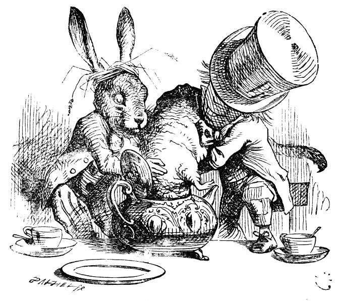

There are very many great JavaScript libraries for creating eye-popping and even interactive charts! And these are now available in R, and can be invoked using R code! So we can “use JavaScript” in R, as it were, without knowing JavaScript! And create something like this:
Unlike the Dormouse, no complaints!
We will explore a few them, as an alternative to ggplot !!
This may be too much of a good thing, or a much of muchness but then, we can always use more then one way of telling our stories!!
Bring the best of JavaScript data visualization to R, https://www.htmlwidgets.org/
Using htmlwidgets in Rmarkdown, https://communicate-data-with-r.netlify.app/docs/communicate/htmlwidgets-in-documents/>
Karambelkar et al, htmlwidgets and knitr , https://cran.r-project.org/web/packages/widgetframe/vignettes/widgetframe_and_knitr.html